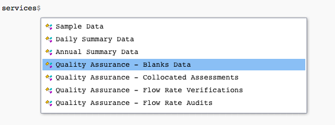
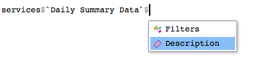
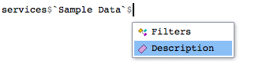
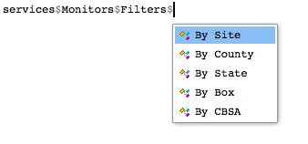

The services object
The services object comes loaded with the package. It is an R list containing comprehensive information about each service offered in the EPA API.
We can see all services available by using names().
names(services)## [1] "MetaData"
## [2] "List"
## [3] "Monitors"
## [4] "Sample Data"
## [5] "Daily Summary Data"
## [6] "Annual Summary Data"
## [7] "Quality Assurance - Blanks Data"
## [8] "Quality Assurance - Collocated Assessments"
## [9] "Quality Assurance - Flow Rate Verifications"
## [10] "Quality Assurance - Flow Rate Audits"
## [11] "Quality Assurance - One Point Quality Control Raw Data"
## [12] "Quality Assurance - PEP Audits"Alternatively, using RStudio’s smart variable selection, you can type services$ to see the available services.

What service to use
You can also see a description for each service. This helps determine what service to use. For example, suppose you want to find hourly data in a particular state. Perhaps these data are contained in a daily summary so you can check the description.

services$`Daily Summary Data`$Description## [1] "Returns data summarized at the daily level. All daily summaries are calculated on midnight to midnight basis inlocal time. Variables returned include date, mean value, maximum value, etc."The description suggests hourly data may be used to produce the values, but we may not necessarily get hourly data.
So we try a different service description.

services$`Sample Data`$Description## [1] "Returns sample data - the finest grain data reported to EPA. Usually hourly, sometimes 5-minute, 12-hour, etc. This service is available in several geographic selections based on geography: site, county, state, CBSA (core based statistical area, a grouping of counties), or latitude/longitude bounding box."This service seems more appropriate to what we need. It specifically mentions hourly data and might even offer finer grain data.
In general, to find the description of a service, you can type the following.
service$ServiceName$DescriptionFilters
Most API services also have a component called a filter. This refers to a filter applied to desired data. For example, if we want to find information on weather monitors, we should specify monitors in a state vs a county. The services object contains a Filters component that lets the user find out how final data can be filtered. Using the weather monitors example, we can see the filters available as follows.
names(services$Monitors$Filters)## [1] "By Site" "By County" "By State" "By Box" "By CBSA"Or, we can use servics$Monitors$Filters$ to see available filters.

The Filters component in the services object contains all information you might need to make a call. It has the endpoint, required API variables, optional API variables (if appropriate), and a URL example of a call.
In general, to see available filters, you can type the following:
names(services$ServiceName$Filters)Or, using RStudio’s smart variable selection:
services$ServiceName$Filters$Further information
After seeing what filter to use, you can see the requirements to make a call. As mentioned above, the Filters component contains an endpoint, required API variable, optional API variable, and an example URL. Each of these helps when trying to build a call with the package.
For instance, say you want to find annual data for a state in the US. You can look at the filters for the annual data service to see how to build the call.
services$`Annual Summary Data`$Filters$`By State`## $Endpoint
## [1] "annualData/byState"
##
## $RequiredVariables
## [1] "email, key, param, bdate, edate, state"
##
## $OptionalVariables
## [1] "cbdate,cedate"
##
## $Example
## [1] "Example; returns all benzene annual summaries from North Carolina collected for 1995:https://aqs.epa.gov/data/api/annualData/byState?email=test@aqs.api&key=test¶m=45201&bdate=19950515&edate=19950515&state=37"In general, you can find information for making a call using a specific filter as follows:
services$ServiceName$Filters$SpecificFilter